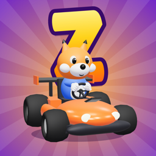

ZOOMBALOO! Turbo Kart
¿Tienes un problema, una duda o una idea para el juego? Escríbenos a soporte.zoombaloo@gmail.com y te responderemos lo antes posible. Si es un error, cuéntanos qué modelo de iPhone usas y qué estabas haciendo cuando ocurrió.
Preguntas frecuentes
¿Cómo se acelera? En el iPhone el kart acelera solo. Gira con las flechas, usa DERRAPE para saltar y derrapar, OBJETO para lanzar objetos y FRENO para frenar.
¿Cómo consigo un mini-turbo? Mantén el derrape en una curva hasta que las chispas sean azules, naranjas o moradas, y suelta.
¿Cómo cambio el idioma? Con el botón 🌐 del menú principal.
¿Necesito internet? No, el juego funciona sin conexión. Solo se conecta a la App Store para las compras.
¿Cómo recupero mis compras? Toca un piloto o auto con candado y pulsa «Restaurar compras».
Have a problem, a question or an idea for the game? Write to soporte.zoombaloo@gmail.com and we’ll reply as soon as we can. If it’s a bug, tell us which iPhone you use and what you were doing when it happened.
FAQ
How do I accelerate? On iPhone your kart accelerates by itself. Steer with the arrows, use DRIFT to hop and drift, ITEM to throw items and BRAKE to brake.
How do I get a mini-turbo? Hold your drift through a corner until the sparks turn blue, orange or purple, then let go.
How do I change the language? With the 🌐 button in the main menu.
Do I need internet? No, the game works offline. It only connects to the App Store for purchases.
How do I get my purchases back? Tap a locked racer or kart and press “Restore purchases”.